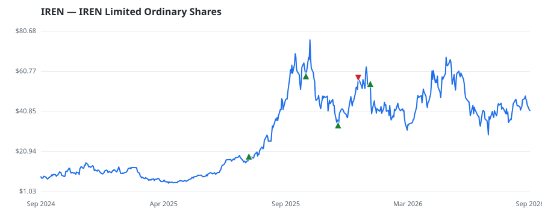

bullish · bearish · n/a — dots: price>SMA10 · SMA10>SMA50 · SMA50>SMA200 · up>down volume (20d)
Banks · large cap · ★ 1 buyer(s) sit on a committee that regulates this industry
Members who bought IREN earned a dollar-weighted +43.9% from their disclosure dates, versus +8.9% for the S&P 500 over the same holding windows (+35.0% alpha).

▲ green = a disclosed purchase · ▼ red = a disclosed sale (plotted on disclosure date)
IREN owns data centers powered by renewable energy in Canada and the US for bitcoin mining and AI cloud infrastructure. The company is in the process of converting its existing bitcoin capacity for AI purposes and securing new power and land supply to expand its data center operation. IREN works closely with industry leaders in AI, such as Microsoft, to support their cloud infrastructure ambitions. FINANCE SERVICES · website
| Revenue | $707.0M | Net income | $-702.6M |
|---|---|---|---|
| Operating income | $-1.0B | Diluted EPS | $-2.22 |
| Assets | $15.8B | Equity | $4.2B |
| Member | Chamber | Out-performer | Disclosed buys $ | Return on buys |
|---|---|---|---|---|
| Cleo Fields ★ | house | yes | $132K | +43.9% |
Disclosed $ figures are bracket midpoints — filings report ranges (e.g. $1,001–$15,000), not exact amounts.